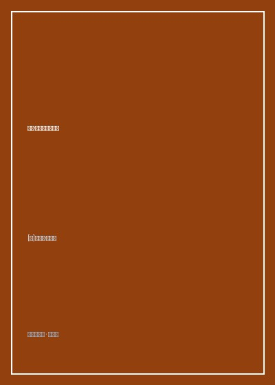

伍迪艾伦电影人生

总体观点
伍迪·艾伦是世界电影史上绝无仅有的神话——连续半个世纪保持着几乎每年自编自导一部高水准电影的惊人高产纪录，斩获四座奥斯卡金像奖却从未亲临领奖现场。传记作家埃里克·拉克斯（Eric Lax）跨越近四十年时间长河，以数十次促膝长谈与片场跟踪记录，编织成了这部最权威的导演工作手记《伍迪艾伦电影人生》（Conversations with Woody Allen）。
本书彻底粉碎了大众对电影创作浪漫化的虚妄想象，将电影还原为一门高度依赖纪律、工匠直觉与解决具体难题的劳动。从在老旧打字机前搜肠刮肚、用最简陋的纸片便签记录荒诞点子，到片场极力克制废话给予演员绝对自由的长镜头调度；从剪辑台上大刀阔斧推翻重来，到对死亡、虚无与爱情不可解难题的自嘲式解构。全书展现了一名真正严肃的艺术创作者应有的清醒与诚实。
核心观点
-
1. 灵感是廉价的，打字机前的残酷纪律才是根本
优秀的喜剧编剧不是等待缪斯降临，而是每天早晨按时坐到书桌前，哪怕头痛欲裂也必须敲出三页纸的铁律。
伍迪·艾伦展示他那个塞满了上百张餐巾纸与旅馆便签的旧抽屉，好点子人人都有，真正的大师是能把零碎段子串成90分钟严密故事结构的人。 -
2. 少即是多：极简主义片场执导与长镜头美学
厌恶好莱坞传统正反打特写剪辑，倾向于使用精心调度的走位长镜头，让演员在自然流动的生活场景中自我绽放。
在拍摄《曼哈顿》经典的长椅看桥镜头时，摄影机架在三脚架上一动不动长达数分钟，完全依靠黑白光影与格什温音乐传递情绪张力。 -
3. 选角成功了，导演的工作就完成了百分之八十
绝不在片场给演员讲冗长空洞的心理动机，只需挑对气质契合的顶级演员，然后尽可能闭嘴不要干扰他们的直觉表演。
与黛安·基顿合作时，伍迪鼓励她穿自己的宽大男式西装出镜，这种松弛的本色发挥直接造就了影史经典的“安妮·霍尔”标志性风格。 -
4. 剪辑台上的狠手：推翻重拍是好电影的必经之路
绝不要舍不得自己辛辛苦苦拍下的废镜头，如果某段戏阻碍了全片节拍，哪怕花了几百万美元也必须毫不留情剪掉。
《安妮·霍尔》初剪版原本是一部混乱的谋杀悬疑片，伍迪在剪辑室果断切掉整条侦探支线，将其重塑为一部关于两性关系的纯粹神经质爱情神作。 -
5. 用滑稽自嘲包裹对死亡与存在虚无的深沉恐惧
幽默是抵抗悲剧世界的唯一止痛剂，在所有看似插科打诨的台词背后，隐藏着对上帝缺席与生命脆弱最悲伤的叩问。
伍迪那句传世名言：“我不是害怕死亡，我只是不想在它发生的时候在场”，在引发哄堂大笑的瞬间击中了人类最原始的宿命恐惧。
全书思维导图 · 知识脉络树
全书结构
-
第一章 构思与写作：便签纸上的荒诞火花
详述伍迪·艾伦的剧本创作习惯，从搜集笑料、提炼前提假设到三幕剧结构搭建的全过程。
展示伍迪使用一台1952年出产的奥林匹亚老式机械打字机写作的习惯，解析其如何保持对喜剧节奏的绝对敏锐度。 -
第二章 选角与表演：让演员做回自己
探讨导演与演员的合作伦理，解析为什么他的试镜通常只需三十秒，以及如何为戴安·基顿、凯特·布兰切特量身定制角色。
还原凯特·布兰切特在《蓝色茉莉》中的拍摄花絮，伍迪只提了一条建议“不要演得太像在演戏”，成就了奥斯卡影后级表演。 -
第三章 摄影与执导：曼哈顿的光影诗篇
与传奇摄影师戈登·威利斯（Gordon Willis）的合作秘辛，解析黑白宽银幕、自然光运用与街头漫步调度。
解析《曼哈顿》开场蒙太奇的视听语言，如何通过高反差黑白摄影将纽约这座城市提升为电影的第一主角。 -
第四章 剪辑与音乐：在暗房里重构灵魂
展现后期制作的残酷决断，探讨早期爵士乐、摇摆乐在烘托情绪节拍中起到的画龙点睛之效。
分享为什么他从不使用现代电子配乐，坚持使用三十年代留声机黑胶爵士老歌，赋予影片恒久常新的时空质感。 -
第五章 职业生涯回眸：拍电影只是为了打发时间
回顾五十年独立电影长跑，坦白对好莱坞商业机制、名利奖项的不屑，分享与死亡和解的自嘲艺术哲学。
坦陈奥斯卡颁奖夜他宁愿在曼哈顿小酒馆吹单簧管也不去走红毯的心态，印证纯粹电影人的孤傲自守。